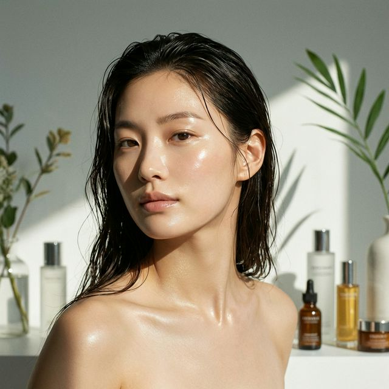

K-BEAUTY • BRIGHTENING • RADIANCE
Korean Glass Skin Tone-Up Facial
Brighter. Luminous. Naturally Radiant.
K-Beauty doesn't cover dull skin. It brings the glow back. At SuA Glow in Carrollton, near Dallas, our Korean-inspired Tone-Up Facial is designed around one of K-Beauty's most recognizable goals: Healthy-looking skin that glows in natural light.
